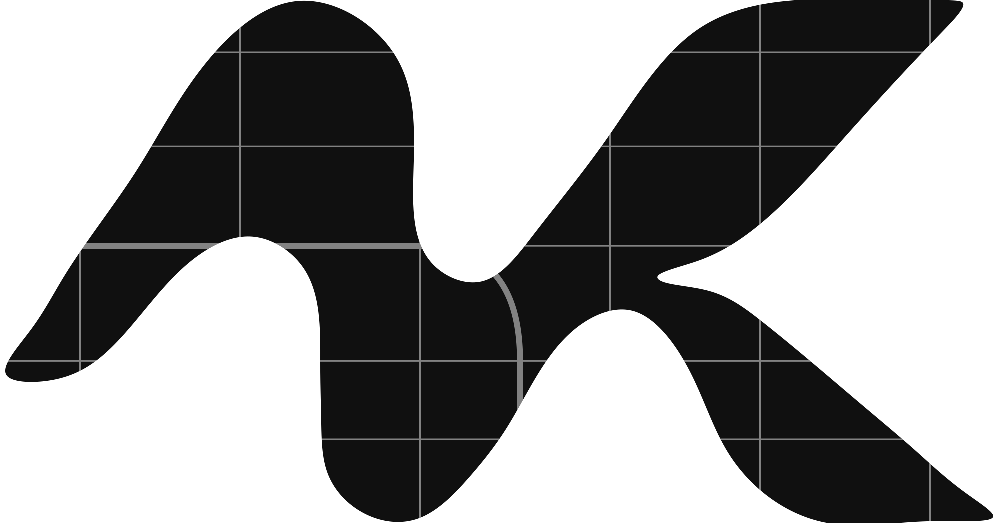

GOOD DECISIONS
BEGIN WITH
CLEAR THINKING.
A clear process turns a complex project into practical decisions, responsibilities and next steps.
Understand the place.
Interrogate the possibilities.
Make the next move count.
The objective is not to add complexity; it is to make the relevant complexity understandable. An effective planning process connects evidence, regulation and design intention.

A PROCESS WITH
PURPOSE.
Seven clear stages, from the first brief to council assessment and what follows. Select a stage to explore responsibilities and typical deliverables.
Understand the brief.
A defined problem is easier to solve.
Clarify what you want to do, what decisions are being made and which site information is available. The first conversation should expose uncertainties before they become project costs.
- Proposed use, scale and desired outcomes
- Property address, ownership and existing information
- Timing, budget assumptions and decision points
NO FALSE
PROMISES.
CLEARER DECISIONS.
The outcome of a planning application cannot be promised in advance. A well-managed process makes assumptions, responsibilities, evidence and next steps visible at every stage.
Building consents, engineering design, legal advice and independent technical certifications are distinct professional responsibilities. Their involvement depends on the proposal.
See the document frameworksABOUT.
Meet the perspective and person behind the process.